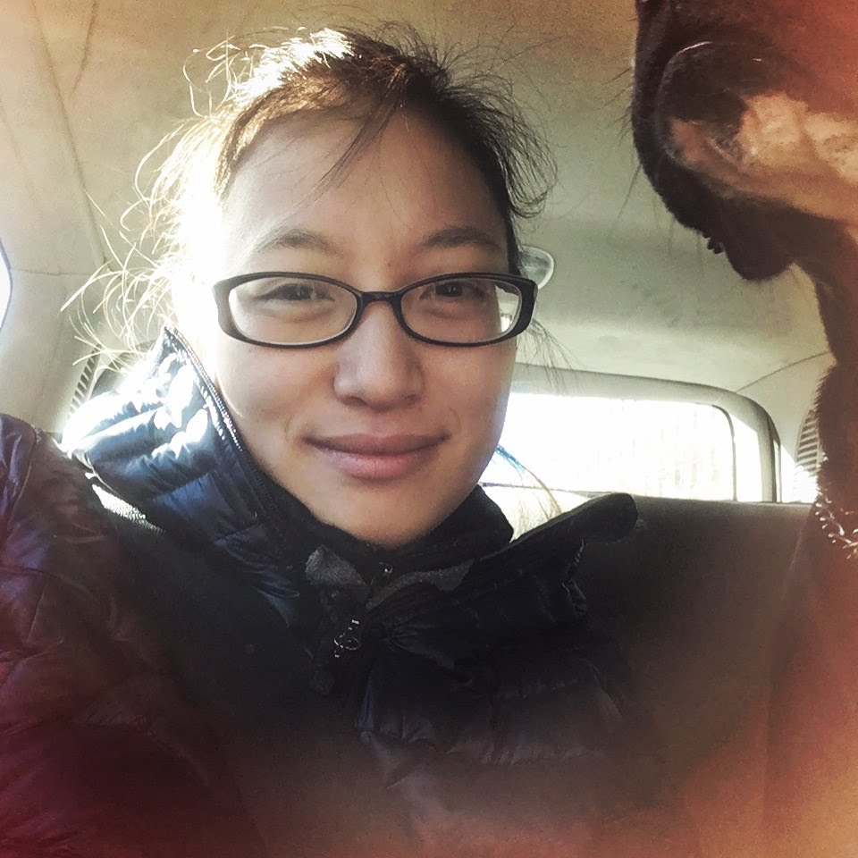

About Me

I am currently learning full stack web development through a boot camp provided by Georgia Tech University. I have a Bachelor of Science in Ecology and Natural Resource Management and am currently employed at Floralis Lanndscape Architectue and Garden Design.
After many years working in the field, I have shifted my focus more in the technology field.I hope to gain a thorough understanding of web development so that I can pursue my own projects and continue to challenge myself. I currently enjoy front end development and have a feeling that I will be focusing on that aspect after the course is over.
In my free time, I enjoy gardening and painting. I hope to adopt a dog as soon as possible. I feel like my life will be complete with a canine companion.
Connect With Me